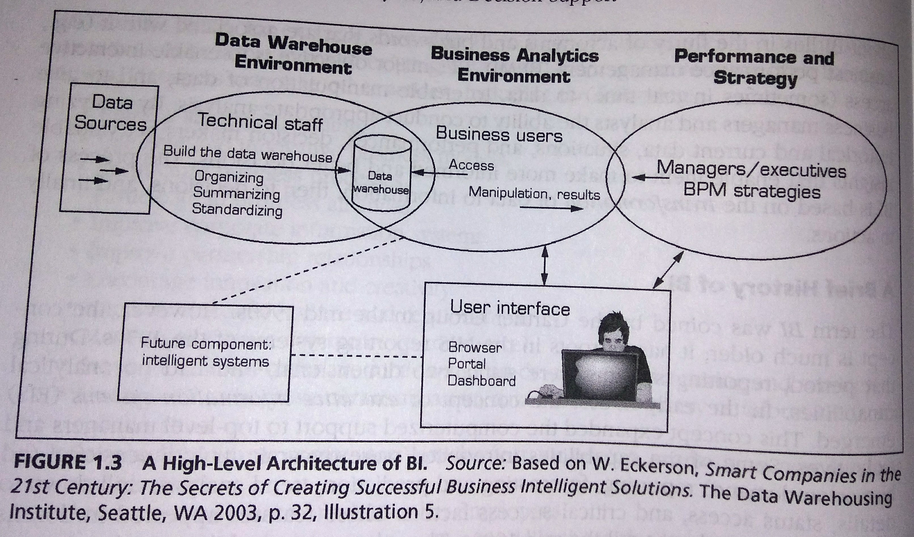
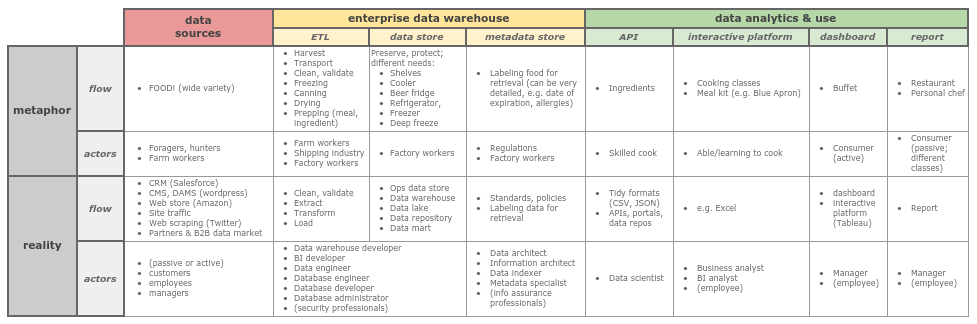

pkb contents
> bi | just under 1908 words | updated 12/18/2017
Business intelligence (BI) systems are a type of
management information system (MIS)
that supports managerial (strategic and operational) decision-making. Sharda et al. (2014) offer the “business pressures-responses-support” model of BI, in which:
-
The business environment supplies pressures and opportunities (see
PESTEL analysis
and
management notes);
-
Managers need to respond (different possibilities, Sharda et al. [2014, p. 7]: "reactive, anticipative, adaptive, and proactive");
-
BI supports their response/decision with analysis and predictions.
In theory, BI adds value by improving decisions. BI may enable organizations to answer their questions faster, or to pose new questions and gain new insights. Faster answers may support faster actions; new insights may indicate and/or support new courses of action. But very clearly, the value of BI depends on (1) the
quality of the data
being fed into the system; (2) the
quality of the analysis
performed on the data; (3) capacity to
turn analysis into decisions,
and most fundamentally, (4) capacity to
act on decisions.
(Senge's concept of a learning organization is relevant here---it is an organization that can not only make and act on decisions, but reflect on them and improve them through iteration. It is a lofty ideal that most organizations are nowhere near.)


https://jtkovacs.github.io/refs/data-science.html
-
DS has more programming, is better at using computational power for analysis
-
DS may involve more sophisticated modeling
-
DS facilitates predictive and prescriptive analytics
-
Because DS uses computers, it loses the context awareness that human actors supply in their interactions with BI and must recreate it somehow, for instance in training machine learning algorithms
-
[use of info to support decisions]
-
[use of computers to support decisions]
-
Executive and management information systems
-
BI systems enabling broader access to data, closer to ground-level where people can base their actions on it

Per Sharda et al. (2004), BI tools provide varying combinations of the following broad functionalities:
-
data storage
-
data management
-
business performance management
-
UI
Data must be
extracted
from operational systems;
transformed
so that it is clean, conformant with data quality standards, and aligned with the logical structure of the data warehouse; and finally
loaded
into the data warehouse. Per Sharda et al. (2014), important factors to consider in selecting ETL tools:
-
Integration with data sources
-
Automatic metadata capture
-
Conformance with open standards
-
Easy-to-use interfaces for developers and uses
A data warehouse is a data store that is used to
-
free up resources by removing data from operational systems;
-
create a trustworthy, safe, and persistent archive of data;
-
clean and aggregate data so that it can be easily analyzed.
Per Sharda et al., many data warehouses have the following characteristics:
-
Subject-oriented
(i.e., conceptually curated)
-
Integrated
(combining data across operational systems)
-
Time variant
(storing data in a way that allows time series analysis)
-
Nonvolatile
(protected from edits)
Per Sharda et al. (2014, p. 47):
-
Reduced infrastructure expense
-
Better compliance
-
Easier for IT/IS to be maintained
-
Reduced warranty expense
-
Improved quality (identifying and prioritizing issues faster)
-
Combines data, enabling construction of a more accurate and comprehensive picture of the organization
Per Sharda et al. (2014, pp. 73-74):
-
"Starting with the wrong sponsorship chain
-
... or offending sponsors by implying deficiencies in their decision-making
-
Setting expectations that you cannot meet
-
Loading the warehouse with information just because it is available
-
Believing that data warehouse database design is the same as transactional database design
-
Choosing a data warehouse manager who is technology oriented rather than user oriented
-
Focusing on traditional internal record-oriented data and ignoring the value of external data and of text, images, and, perhaps, sound and video
-
Delivering data with overlapping and confusing definitions
-
Believing promises of performance, capacity, and scalability [w/r/t BI software purchases]
-
Believing that your problems are over when the data warehouse is up and running
-
Focusing on ad hoc data mining and periodic reporting instead of alerts"
Dimensional modeling is data modeling to optimize retrieval; star schema (denormalized) and snowflake schema (normalized) are common.
-
(In)dependent data mart:
A data mart serves a single department or focuses on a single area; it is conceptually confined. If dependent, the data mart is a subset of a broader data warehouse.
-
Data mart bus architecture:
Dimensionalized data marts linked by conformed dimensions (Ralph Kimball: "plan big, build small").
-
Hub-and-spoke architecture:
Normalized relational data warehouse, serving dependent data marts (Bill Inmon; top-down approach).
-
Centralized data warehouse:
As above.
-
Federated data warehouse:
Existing data warehouses, marts and legacy systems are mapped together and/or physically integrated.
-
Operational data store:
An ODS has fresh data, to support immediate and short-term decision-making. It does not fulfill the traditional DW's role of storing data and enabling analysis across long periods of time.
-
Oper marts:
ODS for multidimensional analysis.
Per Sharda et al. (2014):
-
Which database management system (DBMS) should be used? Should it be relational?
-
For scalability and speed, will parallel processing be required? Will tables need to be partitioned?
-
How much data should be migrated into the new DW, and will this require special tools?
-
What additional tools or integrations will be needed to support data retrieval?
-
What additional tools or integrations will be needed to support data analysis?
More factors, from Ariyachandra and Watson (2005) qtd in Sharda et al. (2014, p. 55):
-
Information interdependence between organizational units
-
Upper management's information needs
-
Nature of end-user tasks
-
Constraints on reqources
-
Compatability with existing systems
-
Perceived ability/capacity of in-house IT staff
"Simply, OLAP is an approach to quickly answer ad hoc questions by executing multidimensional analytic queries against organizational data repositories" (Sharda et al., 2014, p. 69). The disctinction between
transaction
and analytics databases arises from the current state of computer science, viz., you must optimize for either reads or writes. In addition to this basic distinction, there are various
subtypes of OLAP databases
(HTAP, MOLAP, ROLAP, etc.) with varying functionality.
|
OLTP
|
operational database
|
captures each record: emails, credit card transactions, webpage views, …
|
efficiency, control
|
|
OLAP
|
data warehouse
|
ops --> data warehouse --> OLAP --> UI/dashboard
|
aggregation, efficiency, accuracy, access
|
For OLAP, data is stored as a multidimensional cube. Cubes can be efficiently
sliced
on a single dimension or
diced
on several; a user can
drill down
or up for different levels of detail, from summarized to granular; a user can
roll-up
a dimension, running calculations on it and its relationships; and a user may
pivot
to "change the dimensional orientation of a report or ad hoc query-display page" (Sharda et al., 2014, p. 71).
-
IBM Watson
-
Text analytics
-
https://jtkovacs.github.io/refs/text-analytics.html
-
Web analytics
-
Big Data
-
https://jtkovacs.github.io/refs/databases.html#nosql-databases
-
https://jtkovacs.github.io/refs/information-systems.html#what-is-big-data
-
Data mining
-
https://jtkovacs.github.io/refs/machine-learning.html
-
https://jtkovacs.github.io/refs/statistics.html
Per Sharda et al. (2014):
-
Descriptive:
Asking what happened or is happening to generate well-defined business problems and opportunities; also provides answers to simple questions
-
Predictive:
Asking what’s going to happen and why, to generate accurate projections that can inform analyses
-
Prescriptive:
Asking what should be done and generating (or even executing) a specific solution
According to Sharda et al. (2014) and
summarized here,
SAS published a white paper describing different "levels" of analytics:
|
Standard Reporting
|
-
Historical perspective
-
Standard KPI or data parameters
-
Focused on short-term goals and objectives
|
|
Customized Reporting
|
-
Flexible reporting
-
Focused on problem solving
-
Historical perspective
|
|
Drill down analysis
|
-
Root cause analysis
-
Stratification analysis
-
Used exensively in
DMAIC processes
|
|
Alerts & Notifications
|
-
Management by exception
-
Pre-defined business process
-
Real-time feedback
|
|
Statistical Analysis
|
-
Correlation analysis
-
Discriminant analysis
-
Regression analysis
|
|
Forecasting
|
-
Trends
-
Pattern recognition
-
Decision-making capability
|
|
Predictive Modeling
|
-
Prognostics
-
Data-driven decisions
-
|
|
Optimization
|
-
Enable innovation
-
Continuous improvement
-
Adaptive feedback
|
-
Business Performance Management
-
https://jtkovacs.github.io/refs/process-improvement.html
-
Visual analytics
-
Tableau
-
https://jtkovacs.github.io/refs/interfaces.html#reporting-dashboards
-
https://jtkovacs.github.io/refs/graphics-viz.html
-
https://jtkovacs.github.io/refs/sotl.html#visual-design-of-learning-objects
-
definition of big data
-
business value of value
-
big data technologies
-
storage (HDFS)
-
processing (map/reduce)
-
sources
Per Sharda et al. (2014, p. 81):
|
Strategic decisions only
|
Strategic and tactical decisions
|
|
Results sometimes hard to measure
|
Results measured with operations
|
|
Daily, weekly, monthly data currency acceptable; summaries often appropriate
|
Only comprehensive detailed data available within minutes is acceptable
|
|
Moderate user concurrency
|
High number (1000 or more) of users accessing and querying the system simultaneously
|
|
Highly restrictive reporting used to confirm or check existing processes and patterns; often uses predeveloped summary tables or data marts
|
Flexible ad hoc reporting, as well as machine-assisted modeling (e.g., data mining) to discover new hypotheses and relationships
|
|
Power users, knowledge workers, internal users
|
Operational staffs, call centers, external users
|
Sharda, R., Delen, D., & Turban, E. (2014).
Business intelligence: A managerial perspective on analytics
(3rd ed.). New York City, NY: Pearson.